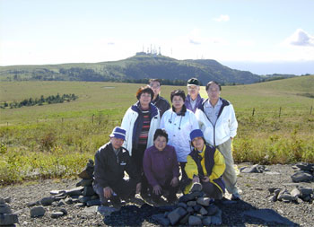
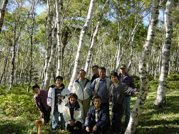
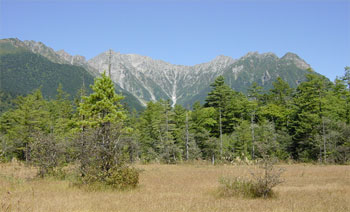
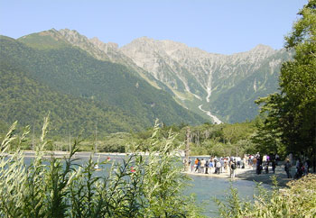
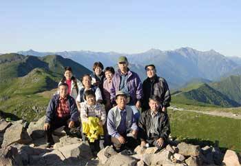
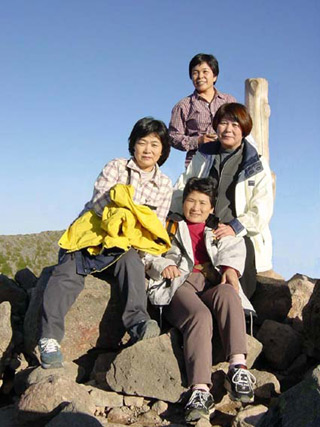
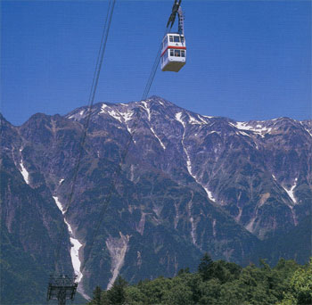

<美ヶ原>
美ヶ原近くの見事な白樺林で。
加工写真1枚目のカメラマンはこの写真から
取って移しました。
<上高地> 穂高連峰を望む
大正池
<乗鞍山頂付近>
ここまでドライブウェイが通じており、駐車場付近には
望遠鏡を持った天体観測マニアがたくさんいました。
<新穂高ロープウェイ>
国内初の2階建てゴンドラで、標高1308mの白樺平から2156mの
西穂高口まで、全長3171mにわたってすばらしい眺めを
満喫できました。
自然なポーズと表情がいいですね。
2001年は9月23～25日に信州に行きました。30年ぶりの思い出旅行です。
霧が峰・美ヶ原・上高地・乗鞍と回って、東洋一の新穂高ロープウェイにも乗りました。
3日間ともすばらしい快晴。この旅があまりにすばらしくて、この後毎年続くきっかけになりました。